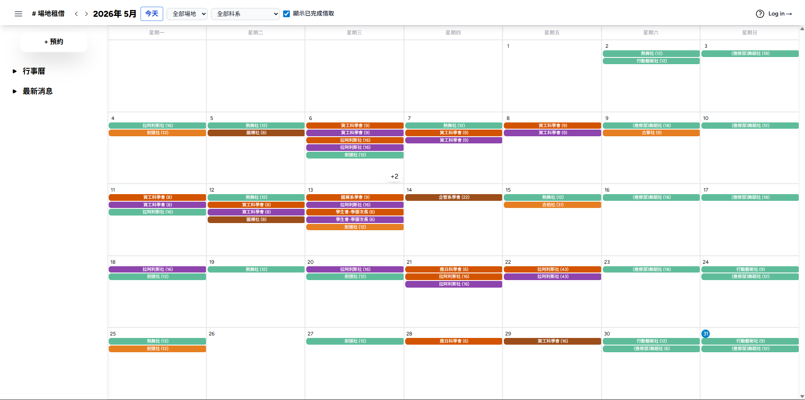
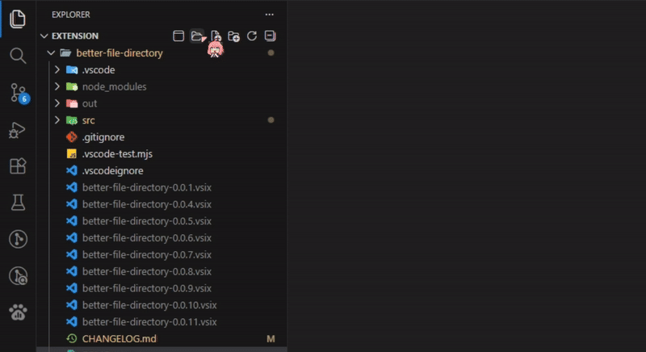
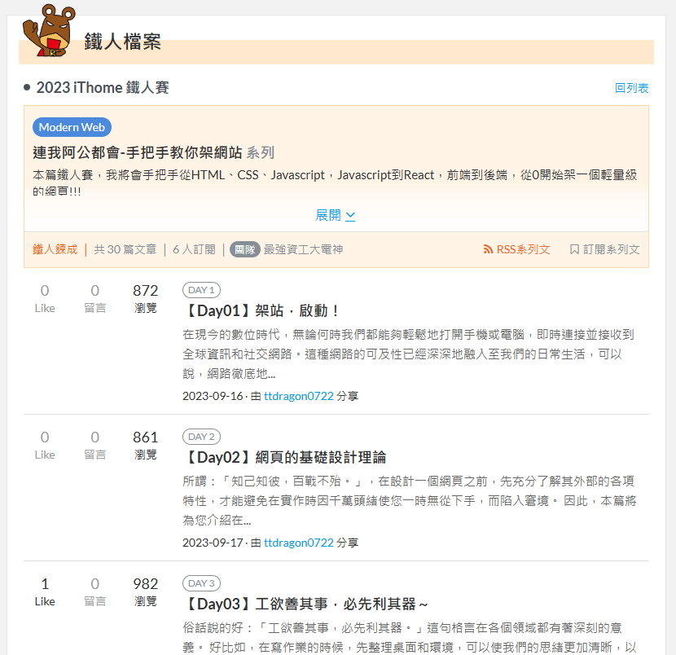
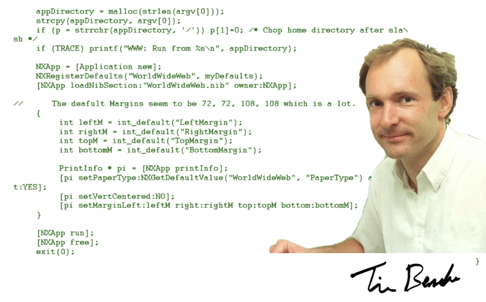
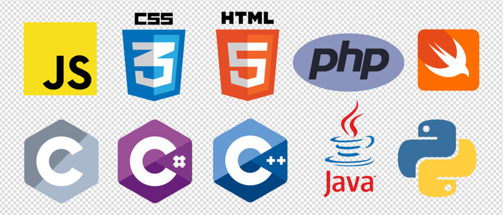
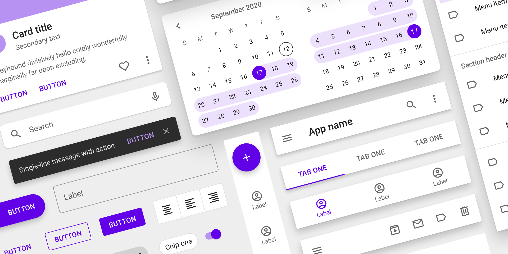
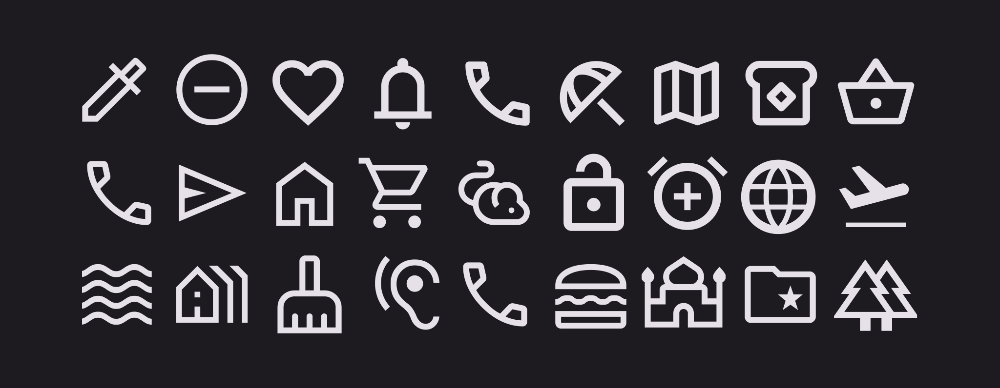
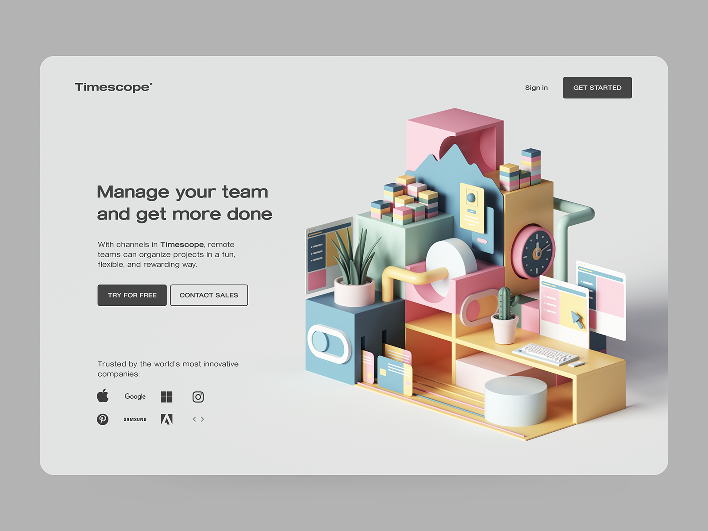
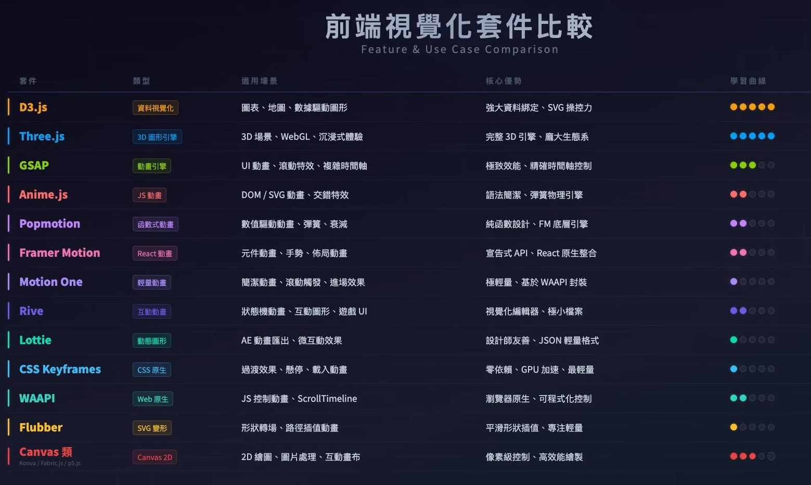

從「想解決問題」這個天生特質出發 —— 相信科技始終來自於人性。
我是賴家煜，大家叫我 Rex / 雷克斯
回顧進入資訊領域的起點，與其說是清晰的志向，不如說是一種「想解決問題」的天生特質。從接觸第一行程式碼開始，我便在思考 —— 是否可以運用所學去解決生活中的問題？
於是有了第一篇研討會論文、DFI 年會評比第三名的 PCB 自動化工具、iThome 鐵人賽 30 天連載 —— 每一段歷程，都是在「課堂知識能否轉化為工具」的提問中，慢慢被堆積起來的。



WorldWideWeb，跑在 NeXT 電腦上
1991 年上線，至今仍可訪問：
info.cern.ch/hypertext/WWW/TheProject.html
The WorldWideWeb (W3) is a wide-area hypermedia information retrieval initiative aiming to give universal access to a large universe of documents.
Everything there is online about W3 is linked directly or indirectly to this document, including an executive summary of the project, Mailing lists, Policy, November's W3 news, Frequently Asked Questions.
才有顏色和排版

網頁開始「不重新整理就更新內容」
AJAX 是一種「技術」而非產品，沒有官方 logo —— 右圖以示意呈現它的非同步運作。
技術成熟後，網頁進入「風格輪替」階段 —— 挑幾個影響最深的轉折來看。
| 年份 | 關鍵轉折 | 一句話重點 |
|---|---|---|
| 2010 | 平面轉網頁 | 把印刷的平面設計手法搬上數位網頁 |
| 2013 | Flat Design | 拿掉陰影漸層，乾淨、扁平、資訊優先 |
| 2014 | Material Design | Google 用「材質與光影」重新定義介面 |
| 2017 | Duotone 雙色調 | 照片只剩兩色，強化品牌識別 |
| 2019 | 插畫與 3D | 客製插畫、3D 建模，做出差異化 |
| 2020+ | 創意 × 技術 | 設計與開發互相推進，持續循環進化 |
風格一直在換，但「內容清楚、層次分明」始終是不變的核心。
內容整理自 Riven《10 年網頁設計流行風格回顧與趨勢分析（2010–2020）》，AAPD。
去除陰影與漸層，回到單純配色與乾淨的資訊呈現。
Google 提出的數位介面語言，用「材質與光影」重新定義畫面元素。


把照片轉換成兩種顏色，搭配品牌標準色，強化視覺識別。
用量身訂製的插畫與 3D 建模感畫面，做出別人複製不來的差異化。

| 類型 | 例子 | 技術關鍵字 |
|---|---|---|
| 一般網站 | 個人作品集、部落格 | HTML / CSS / JS |
| Web App | Google Docs、Figma | React / Vue |
| 行動 App | Instagram（底層也是 JS） | React Native / Expo |
| 文件工具 | Notion、Anki 卡片 | Electron / Web |
| VS Code 插件 | 你用的任何插件 | TypeScript + Web API |
講解重點：這些東西的底層語言都一樣 — HTML、CSS、JavaScript
實作目標：用 AI 在 10 分鐘內生出一個個人介紹頁面
index.html，用瀏覽器打開同一個 AI，會不會用差很多 —— 關鍵在「你怎麼開口」。
# 標題、- 條列、**重點**，AI 更容易讀懂結構真的不知道怎麼寫？先請 AI 幫你「潤稿」，潤完再拿去生成 —— 永遠比你直接亂寫的結果好。
寫 prompt、README、筆記都會用到 —— 左邊是「語法」，右邊是「顯示結果」。
# 主標題
## 次標題
**粗體**、*斜體*
- 無序項目
- 無序項目
1. 有序項目
2. 有序項目
> 引言區塊
`行內程式碼`
[連結文字](https://...)
---為什麼同樣問題，輸出差很多？
Prompt 是你跟 AI 說話的方式。
讓學生複製這些關鍵字加進 Prompt，立刻看到差異。
接下來三張投影片，分別展開三大類關鍵字。
想要網頁「動起來」？在 prompt 裡直接點名主流動畫函式庫，AI 生出來的精準度立刻提升。
在 prompt 寫「use GSAP ScrollTrigger」「use Three.js（WebGL）」，比只說「加點動畫」精準太多。

學生常不知道 UI 元件的名字，所以 AI 生出來的不是他們要的。
| 元件名稱 | 說明 | 常見用途 |
|---|---|---|
Header / Navbar | 頁面頂部導覽列 | 每個網站都有 |
Hero Section | 首屏大標題區塊 | Landing page 必備 |
Card | 資訊卡片容器 | 商品列表、文章列表 |
Chip / Badge / Tag | 小標籤 | 技能標籤、分類標記 |
Sidebar | 側邊欄 | 管理後台、文件網站 |
Modal / Dialog | 彈出視窗 | 確認操作、表單 |
Toast / Snackbar | 底部短暫通知 | 「儲存成功」提示 |
Breadcrumb | 麵包屑導覽 | 顯示你在哪一層 |
Skeleton Loader | 骨架載入動畫 | 資料還沒來時的佔位 |
The simplest way to ship a website in 10 minutes.
Get started →同樣的內容，差別只在「眼睛第一眼落在哪裡」。
margin 元素與元素「之間」的外距padding 內容與邊框「之間」的內距width × height 內容本身的大小內容一模一樣，差別只在「有沒有讓它呼吸」。
顏色會「說話」—— 用錯顏色，使用者會誤會你的意思。
講解 Markdown 標題層級
# H1 頁面主標題（一頁一個）## H2 主要章節### H3 子章節#### H4 次要分段層級不是用大小決定，是用「重要性」決定。
如果「層級」沒設計好，所有資訊都長一樣，使用者根本不知道先看哪裡。
同樣的內容，靠字級、粗細、留白與按鈕樣式，立刻建立清楚的視覺層級。
內容沒變，變的只是「層級」。
點「加入購物車」時，數量就該預設為 1 —— 而不是還要使用者先按一次「＋」。
關閉的「✕」要讓人一眼找到、好按。故意把叉叉做得超小、超難按的，都不合格。
用最少步驟達成目的 —— 流程簡單、不繞路、不互相卡死。
沒層級、沒留白、配色刺眼、字體亂、按鈕看不出來 —— 就是經典的網頁惡夢。
本店商品超優惠！！！買到賺到不買可惜！！！
MacBook Pro 14吋 只要 59900 數量有限要買要快快快
點擊下方按鈕立即搶購，錯過再等一年
★ 立即搶購 ★→ 更多商品 → 更多優惠 → 更多驚喜 →
目標：讓學生的網頁有公開網址可以傳給朋友（10 分鐘實作）
username.github.io）index.html這是第二個成就感鉤子，而且可以發給父母看。